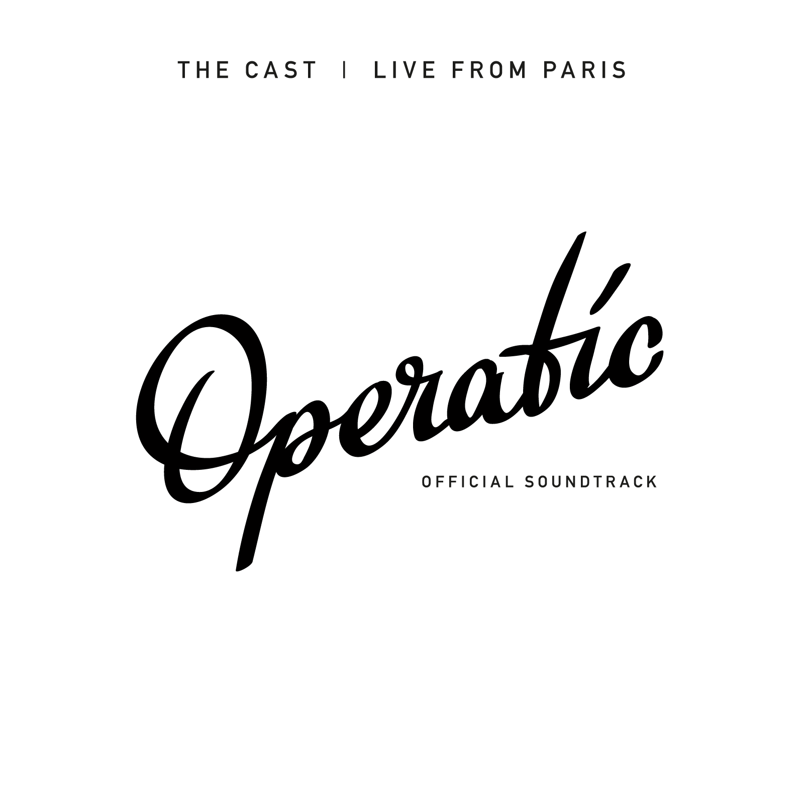

Operatic - the land of musical smiles, a review of "The Cast: Live from Paris"
Tomorrow I'll be attending a cinema premiere, which is a first for me. It is a film called Operatic, and is a documentary that follows six singers and their opera "band", The Cast, on their 2014 Parisian tour. The soundtrack for the film, which is in fact a recording of a live concert, is being released on Bandcamp.
The format is simple: six singers (three men, three women), with voices spanning from the cellar to the stratosphere, entertain with selections from popular arias and choruses that likewise run the musical gamut, from Wagner to Lehár. What's compelling about "Live from Paris" is the energy, enthusiasm for the music, and the raw determination of the performers that you will have fun. In fact, this may be the most striking feature of the recording: the conviction that opera - the interactive experience of singing and being sung to - is as natural an activity for a group of friends as sharing food or drink.
Campbell Vertesi, the basso profundo (and strongest French speaker) of the group, writes that "studio recordings leave out half the point of music: the audience", and that the exciting moments of the music "wouldn't be the same without the audience roaring to its feet afterwards". This is apparent on "The Cast: Live from Paris". Acoustically, you can not only reach out and touch the singers, but you're also right there in the middle of the audience. It's a small venue - you hear the comments and reactions of the listeners almost as clearly as you hear the singers themselves.
You know right away that this is not a traditional opera recording. The first track is the announcement, in French, that taking photos and videos with your mobile phone is allowed: "of course", and that sharing the experience on Facebook, Twitter, Instagram is encouraged. Oh, and enjoy yourself: "it's OK, you can smile, you're allowed to have fun," and "please sing along".
And then the singing starts, with Brindisi from La Traviata, the chorus of six, with Dimitrij Morozov on piano, playing the part of the orchestra. You hear right away that the venue is not a concert hall. It sounds more like a cabaret (in fact, it's a recording studio). There's not a lot of "hall" in the sound, but the spacial imaging is good. You hear the singers moving across the stage, and can position them individually from left to right. The small space and close mics also serve to remind exactly how powerful opera singing is: it's nearly impossible to make a truly satisfying recording of even one singer operating at max volume; this band has six.
The show then proceeds to introduce each of the singers. Bryn, playing the "party girl" sings a "love song" - Sempre Libera - with its high and clear vocal acrobatics stunningly delivered. Madness! Euphoria!
Till - the only German in the otherwise Anglo-Saxon group - introduces himself in English, explaining that he "never really liked Wagner" until he heard "O du, mein holder Abendstern" from Tannhäuser. He explains that it is the sense of loss that it expresses which makes it so dear to him. He then delivers the first (and possibly the biggest) real musical highlight of the evening. The interplay between the singer and the piano tremolo creates a magical sense of space - "Ein sanftes Licht" - which for me required an immediate second hearing (one of the advantages of recordings). The text is also true poetry, more closely related to the Lieder tradition than any of the other arias on the program.
grüsse sie, wenn sie vorbei dir zieht,
wenn sie entschwebt dem Tal der Erden
Somewhat continuing on the contemplation of death, the three ladies join forces in a trio rendition of "O mio babbino caro" from Pucinni's Gianni Schicchi. This is lovely music, and one is almost powerless but to enjoy it, and the ladies deliver a solid reading. Yet, having just floated out of the valley of the Earth in the sombre shroud of Death, I found myself wanting to prolong the mood of introspection. I don't quite believe Lauretta when she says she'd like to die. She doesn't mean it the same way Wolfram does:
Mi struggo e mi tormento!
O Dio, vorrei morir!
I am anguished and tormented!
Oh God, I'd like to die!
But nevermind Death! He's no fun. Onward with the famous Quartet from Rigoletto. The Cast succeeds wonderfully with this number, aided by the aforementioned spacial separation of the voices in the recorded sound. The different personalities and overlapping textures come through marvelously.
Then comes Brigitte, with the Seguidilla from Bizet's Carmen, with her powerful lower tessitura, and surprising strength at the top of the range. The compelling rhythmic clarity of the Bizet and Verdi before it keep things moving nicely.
Next up is Allison, whose voice immediately overpowers the microphones with the vocal warmups in La Fille du Régiment by Gaetano Donizetti. She breezes up to some effortless high Cs - and is rewarded with much cheering from the audience.
The Cast rounds out the solo pieces with Kevin and Campbell singing "Das Land des Lächelns" (Franz Lehár), and "Si la rigueur" from the little known La Juive by Jacques François Fromental Halévy. Kevin then delivers a highly entertaining "Largo al factotum" from Rossini's Barber of Seville:
Figaro! Figaro! Figaro!, etc.
Dear me, what frenzy!
With the solos behind them, the program hits a sort of a coda with a series of tutti pieces, starting with the trio "Una voce poco fa", also from Barber of Seville, a girls-only tag-team virtuoso romp where everybody gets a chance to flex their pipes, and Bryn earns bravos mid-aria with a sustained note that leaves you wondering where the air supply comes from.
The performance culminates with a pair of feel-good tunes from the world of operetta, Lehár's Lippen Schweigen (sung in English), and then Brüderlein und Schwesterlein (sung in German) from Johann Strauss' Die Fledermaus, where the audience is instructed to give kisses. Brindisi, reprised, is offered as an encore.
The audience was clearly well entertained, the evening an apparent success. But how does the format work as an album?
In opera, one of the primary tensions (and strengths) of the medium comes from the uncomfortable balance between storytelling and music. The more "music" there is, the less the audience can follow what's happening in the plot, thus the need for recitative and aria. By choosing only arias from different operas, sung in a variety of different languages, The Cast is clearly not staging an opera, or even singing real "opera": it is, as the name of the film suggests, operatic.
op·er·at·ic: adj. Of, related to, or typical of the opera: an operatic aria.
The real joy is in the singers, and the singing itself, not the story, not the characters. And that's what this album is really about: the beauty of singing, unencumbered by tragic plot lines, overblown scenery, complex staging, or a large (loud) orchestra. "Have you ever sat close enough to reach out and touch the singers?" asks the Operatic website. Listening to "The Cast: Live from Paris", you really have the feeling that you're in the front row, and yes, you can reach out and touch them.
In closing, I'd like to quote Campbell from his discussion on the place of live recordings in today's classical music scene:
"If you want to record the atmosphere of a show, if you want to keep the excitement of the audience and the intimate feeling of a performance, you have to make a live recording. That doesn't happen very often anymore in the classical industry. So we're bucking the trend, and daring to release a live album - warts and all. You can hear us get excited and improvise, you can hear us make mistakes. But most important, you can hear the audience loving every minute."